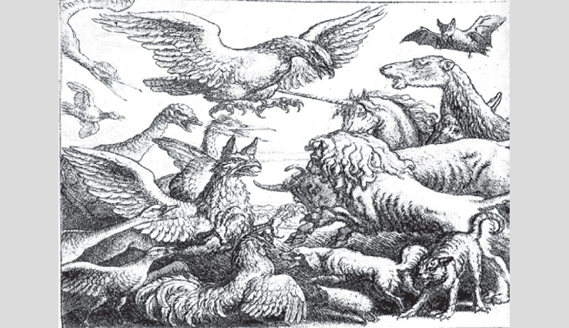

 A great conflict was about to come off between the Birds and the Beasts. When the two armies were collected together the Bat hesitated which to join. The Birds that passed his perch said: "Come with us"; but he said: "I am a Beast." Later on, some Beasts who were passing underneath him looked up and said: "Come with us"; but he said: "I am a Bird." Luckily at the last moment peace was made, and no battle took place, so the Bat came to the Birds and wished to join in the rejoicings, but they all turned against him and he had to fly away. He then went to the Beasts, but soon had to beat a retreat, or else they would have torn him to pieces. "Ah," said the Bat, "I see now, "He that is neither one thing nor the other has no friends."